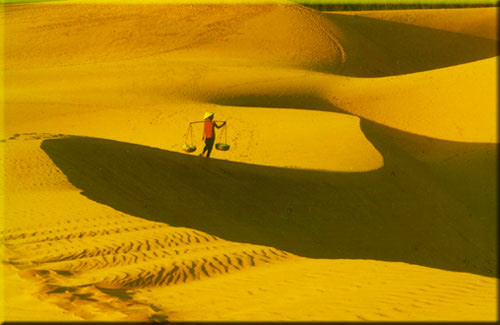

Mũi Né – Huyền bí và quyến rũ
Biển và cát là những gì mà Phan Thiết hào hiệp ban tặng cho du khách. Phan Thiết nằm trong vùng nhiệt đới, ít chịu ảnh hưởng gió mùa đông bắc, khí hậu nóng và khô, lượng mưa trung bình chỉ 800–1.150 mm – ít nhất khu vực Nam Bộ.
Từ nhiều năm qua, đồi cát Mũi Né là đề tài quen thuộc của các cuộc thi ảnh nghệ thuật, là biểu tượng của vùng đất Bình Thuận. Bờ biển Hòn Rơm sạch và đẹp, nước trong xanh, sóng chạy dưới chân những hàng dừa mát rượi.